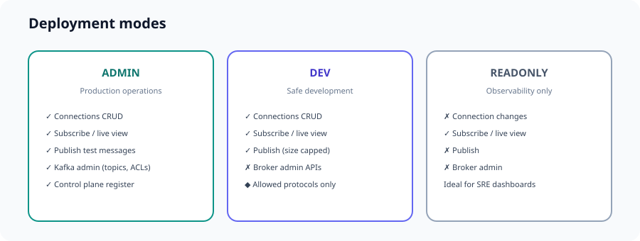
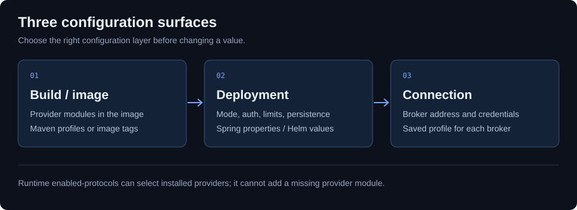

Configuration
application.yml, environment variables, Helm values, Maven profiles, and deployment modes.

Core properties
eventore:
deployment-mode: ADMIN # ADMIN | DEV | READONLY
enabled-protocols: # optional comma list; empty = all on classpath
control-plane:
auto-register-on-startup: true
data-plane:
require-control-plane-registration: true
dev:
allowed-protocols: # DEV only: subset of registered protocols
- KAFKA
- KINESIS
max-publish-bytes: 65536
Deployment modes
| Mode | Connections | Subscribe / live | Publish | Broker admin |
|---|---|---|---|---|
ADMIN | CRUD | Yes | Yes | Yes (Kafka topics, ACLs, …) |
DEV | CRUD | Yes | Yes (size capped) | No |
READONLY | Read-only | Yes | No | No |
In DEV, only protocols listed under eventore.dev.allowed-protocols are accepted, intersected with control-plane registration.
Enabled protocols (runtime)
Limits which providers bootstrap registers and which appear in GET /api/v1/config → supportedProtocols.
# Environment
EVENTORE_ENABLED_PROTOCOLS=KAFKA,KINESIS
# Spring
eventore.enabled-protocols=KAFKA,KINESISValid values: KAFKA, PULSAR, RABBITMQ, MQTT, JMS, KINESIS, GCP_PUBSUB, AZURE_SERVICE_BUS.
Maven profiles (build time)
| Profile | Providers on classpath |
|---|---|
providers-all (default) | All eight modules |
kafka-kinesis | Kafka + Kinesis |
provider-kafka | Kafka only |
provider-kinesis | Kinesis only |
mvn -DskipTests -Pkafka-kinesis -P!providers-all packagePair with Spring profile kafka-kinesis in application-kafka-kinesis.yml for defaults.
Helm: stream providers
Required list eventore.streamProviders drives runtime enabled-protocols, DEV allowed protocols, and the backend image tag. See published artifacts.
eventore:
streamProviders:
- KAFKA
- KINESIS
deploymentMode: ADMIN
connections:
persistence:
enabled: false
volumeType: emptyDir # or pvc + size / existingClaim
security:
apiToken: "" # or apiTokenExistingSecret
allowedOrigins: "*"Image tag auto-derived from the chart application version: 0.2.1-kafka-kinesis. Eight providers use 0.2.1-all.
helm install eventore ./deploy/helm/eventore \
-f deploy/helm/eventore/values-kafka-kinesis.yamlCustom Docker build:
docker build -f docker/Dockerfile.backend \
--build-arg EVENTORE_STREAM_PROFILES=kafka-kinesis .Control plane API
# Snapshot (revision, providers, UI cascade)
GET /api/v1/control/plane
# Register at runtime (ADMIN)
POST /api/v1/control/providers/KAFKA/register
# Deregister
DELETE /api/v1/control/providers/MQTT/registerEmbedded in config for the UI:
GET /api/v1/config
# → controlPlane.uiCascade.connectionProtocols
# → controlPlane.uiCascade.inspectProtocols
# → controlPlane.uiCascade.adminProtocolsOpenAPI catalog
Active stream contracts for this deployment:
GET /api/v1/openapi/catalogPer-stream YAML is served under /openapi/streams/{id}-api.yaml when that provider is registered. Streams include core, inspect, diagnostics, kafka, and kinesis.
Runtime configuration reference
Defaults below come from EventoreProperties and application.yml. Helm uses camelCase values and renders Spring’s kebab-case property names into SPRING_APPLICATION_JSON.
eventore.deployment-mode· DEV- Sets allowed operations. Helm:
eventore.deploymentMode. eventore.enabled-protocols· empty- An empty value selects modules on the classpath. Helm derives this from
eventore.streamProviders, whose chart default is[KAFKA]. eventore.subscriptions.max-concurrent· 50- Concurrent subscription limit. Helm:
eventore.subscriptions.maxConcurrent. eventore.subscriptions.queue-capacity· 500- Per-subscription buffering capacity. Helm:
eventore.subscriptions.queueCapacity. This is not durable broker storage. eventore.dev.max-publish-bytes· 1048576- Dev-mode payload size limit (1 MiB). Helm:
eventore.dev.maxPublishBytes. eventore.max-publish-bytes· 10485760- General publish size limit (10 MiB). The bundled chart does not expose a separate value for this property.
eventore.connections.persistence.enabled· false- Enable durable profile storage explicitly. Helm’s file path defaults to
/data/connections.json. eventore.security.api-token· empty- Empty disables static token authentication. Use a nonempty secret for authenticated deployments.
eventore.security.allowed-origins· *- Comma-separated browser origins used for CORS and WebSocket checks. Helm:
eventore.security.allowedOrigins. eventore.cluster.mode· LOCAL- Cluster fan-out mode:
LOCAL(standalone in-memory bus) orREDIS(distributed multi-replica pub/sub fan-out). eventore.security.jwt.enabled· false- Enable enterprise OIDC / JWT Bearer token authentication with claim-based RBAC mapping.
Authentication, Enterprise Identity & RBAC
EventOre supports two authentication strategies:
- Static API Token: A single shared token verified via constant-time comparison for lightweight deployments. Pass via
Authorization: Bearer TOKENorX-API-Key. - Enterprise OIDC / JWT Bearer Tokens: Validates signed JWT tokens from corporate identity providers (Keycloak, Okta, Azure Entra ID, Auth0). Signature is verified using HMAC-SHA256, alongside expiration, clock-skew, and audience/issuer assertions.
eventore:
security:
jwt:
enabled: true
issuer: "https://auth.company.com/"
audience: "eventore"
secret: ${JWT_SIGNING_SECRET}
role-claim: "roles"
workspace-claim: "workspaces"Claims are automatically extracted into a UserPrincipal mapped to fine-grained RBAC roles:
| Role | Permissions |
|---|---|
PLATFORM_ADMIN | Full platform administration, provider lifecycle, all broker operations, workspace management. |
WORKSPACE_ADMIN | Connection and bridge CRUD within assigned workspaces, topic creation/deletion. |
OPERATOR | Message publishing, DLQ redrive, inspection, and live stream consumption within assigned workspaces. |
VIEWER | Read-only message search, live view, and lag inspection. Mutations are rejected. |
Multi-Tenant Workspaces
Workspaces provide tenant boundary isolation for connections, bridges, and live streams across teams (e.g. default, checkout-team, analytics). Manage them dynamically via /api/v1/workspaces or switch active workspaces directly in the console header dropdown.
Cluster Mode & Message Fan-Out Bus
When running multiple backend replicas in Kubernetes, configure Redis pub/sub cluster mode to fan-out live stream messages to all connected WebSocket and SSE browser clients without session stickiness:
eventore:
cluster:
mode: REDIS
redis-host: redis-cluster.messaging.svc.cluster.local
redis-port: 6379
channel: eventore:cluster:stream-fanoutQuery node telemetry and peer node count at any time via GET /api/v1/cluster/status.
Run a JAR with explicit Spring configuration
Save a dedicated configuration file rather than assuming a Helm values file can be read by Spring:
eventore:
deployment-mode: DEV
enabled-protocols: MQTT
subscriptions:
max-concurrent: 10
queue-capacity: 200
security:
api-token: ${EVENTORE_SECURITY_API_TOKEN}
allowed-origins: "http://localhost:5173"Set EVENTORE_SECURITY_API_TOKEN in the process environment, then pass the file location when starting the built JAR:
java -jar backend/eventore-server/target/eventore-server-0.2.1.jar --spring.config.additional-location=file:./eventore-local.ymlRestart the backend after changing deployment configuration. Verify the effective mode and protocol list with GET /api/v1/config. Changing a connection profile is a separate operation.
Diagnostics API
GET /api/v1/diagnostics/subscriptionsSubscription health for the dashboard; requires API token when eventore.security.api-token is set. Documented in diagnostics-api.yaml.
Related: Control & data plane · Deployment